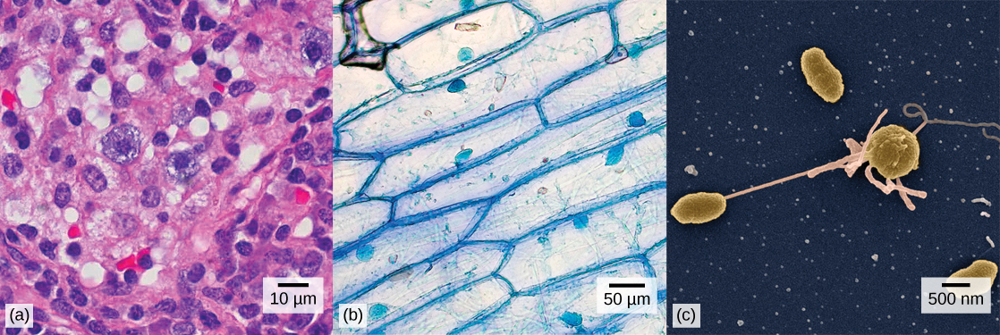
Close your eyes and picture a brick wall. What is the basic building block of that wall? It is a single brick, of course. Like a brick wall, your body is composed of basic building blocks, and the building blocks of your body are cells.
Your body has many kinds of cells, each specialized for a specific purpose. Just as a home is made from a variety of building materials, the human body is constructed from many cell types. For example, epithelial cells protect the surface of the body and cover the organs and body cavities within. Bone cells help to support and protect the body. Cells of the immune system fight invading bacteria. Additionally, red blood cells carry oxygen throughout the body. Each of these cell types plays a vital role during the growth, development, and day-to-day maintenance of the body. In spite of their enormous variety, however, all cells share certain fundamental characteristics.
- Describe the roles of cells in organisms
- Compare and contrast light microscopy and electron microscopy
- Summarize the cell theory
- Name examples of prokaryotic and eukaryotic organisms
- Compare and contrast prokaryotic cells and eukaryotic cells
- Describe the structure of eukaryotic plant and animal cells
- State the role of the plasma membrane
- Summarize the functions of the major cell organelles
- Describe the cytoskeleton and extracellular matrix
- Explain why and how passive transport occurs
- Understand how electrochemical gradients affect ions
- Describe endocytosis, including phagocytosis, pinocytosis, and receptor-mediated endocytosis
| # | Lesson | Key Concepts | Source |
|---|---|---|---|
| 1 | How Cells Are Studied | Light microscopes, electron microscopes, cell theory, magnification, resolving power | CB 3.1 |
| 2 | Prokaryotic vs. Eukaryotic | 4 common components, prokaryote structure, cell size, surface area to volume ratio | CB 3.2 |
| 3 | Eukaryotic Cell Structure | Plasma membrane, cytoplasm, cytoskeleton, nucleus, ribosomes | CB 3.3 |
| 4 | Organelles | ER, Golgi, lysosomes, endomembrane system, mitochondria, chloroplasts, peroxisomes | CB 3.3 |
| 5 | Cell Connections & Membrane | ECM, cell junctions, fluid mosaic model, membrane proteins | CB 3.3–3.4 |
| 6 | Passive Transport | Diffusion, facilitated diffusion, osmosis, tonicity (hypertonic/hypotonic/isotonic) | CB 3.5 |
| 7 | Active Transport | Electrochemical gradient, Na⁺/K⁺ pump, endocytosis, phagocytosis, exocytosis | CB 3.6 |
| 8 | Unit Review & Practice Test | All topics — 20-question comprehensive assessment | All |
| Standard | Description | Lessons |
|---|---|---|
| BIO.2a | Cell structure and organelles | 1, 2, 3, 4 |
| BIO.2b | Cell membrane structure and function | 5 |
| BIO.2c | Cell transport (passive and active) | 6, 7 |
| BIO.2d | Prokaryotic vs. eukaryotic cells | 2 |
- Describe the roles of cells in organisms
- Compare and contrast light microscopy and electron microscopy
- Summarize the cell theory
A cell is the smallest unit of a living thing. A living thing, like you, is called an organism. Thus, cells are the basic building blocks of all organisms.
In multicellular organisms, several cells of one particular kind interconnect with each other and perform shared functions to form tissues (for example, muscle tissue, connective tissue, and nervous tissue), several tissues combine to form an organ (for example, stomach, heart, or brain), and several organs make up an organ system (such as the digestive system, circulatory system, or nervous system). Several systems functioning together form an organism (such as an elephant, for example).
There are many types of cells, and all are grouped into one of two broad categories: prokaryotic and eukaryotic. Animal cells, plant cells, fungal cells, and protist cells are classified as eukaryotic, whereas bacteria and archaea cells are classified as prokaryotic. Before discussing the criteria for determining whether a cell is prokaryotic or eukaryotic, let us first examine how biologists study cells.
Cells vary in size. With few exceptions, individual cells are too small to be seen with the naked eye, so scientists use microscopes to study them. A microscope is an instrument that magnifies an object. Most images of cells are taken with a microscope and are called micrographs.
To give you a sense of the size of a cell, a typical human red blood cell is about eight millionths of a meter or eight micrometers (abbreviated as µm) in diameter; the head of a pin is about two thousandths of a meter (millimeters, or mm) in diameter. That means that approximately 250 red blood cells could fit on the head of a pin.
The optics of the lenses of a light microscope changes the orientation of the image. A specimen that is right-side up and facing right on the microscope slide will appear upside-down and facing left when viewed through a microscope, and vice versa. Similarly, if the slide is moved left while looking through the microscope, it will appear to move right, and if moved down, it will seem to move up. This occurs because microscopes use two sets of lenses to magnify the image. Due to the manner in which light travels through the lenses, this system of lenses produces an inverted image (binoculars and a dissecting microscope work in a similar manner, but include an additional magnification system that makes the final image appear to be upright).
Most student microscopes are classified as light microscopes (Figure 3.2a). Visible light both passes through and is bent by the lens system to enable the user to see the specimen. Light microscopes are advantageous for viewing living organisms, but since individual cells are generally transparent, their components are not distinguishable unless they are colored with special stains. Staining, however, usually kills the cells.
Light microscopes commonly used in the undergraduate college laboratory magnify up to approximately 400 times. Two parameters that are important in microscopy are magnification and resolving power. Magnification is the degree of enlargement of an object. Resolving power is the ability of a microscope to allow the eye to distinguish two adjacent structures as separate; the higher the resolution, the closer those two objects can be, and the better the clarity and detail of the image. When oil immersion lenses are used, magnification is usually increased to 1,000 times for the study of smaller cells, like most prokaryotic cells. Because light entering a specimen from below is focused onto the eye of an observer, the specimen can be viewed using light microscopy. For this reason, for light to pass through a specimen, the sample must be thin or translucent.
A second type of microscope used in laboratories is the dissecting microscope (Figure 3.2b). These microscopes have a lower magnification (20 to 80 times the object size) than light microscopes and can provide a three-dimensional view of the specimen. Thick objects can be examined with many components in focus at the same time. These microscopes are designed to give a magnified and clear view of tissue structure as well as the anatomy of the whole organism. Like light microscopes, most modern dissecting microscopes are also binocular, meaning that they have two separate lens systems, one for each eye. The lens systems are separated by a certain distance, and therefore provide a sense of depth in the view of their subject to make manipulations by hand easier. Dissecting microscopes also have optics that correct the image so that it appears as if being seen by the naked eye and not as an inverted image. The light illuminating a sample under a dissecting microscope typically comes from above the sample, but may also be directed from below.
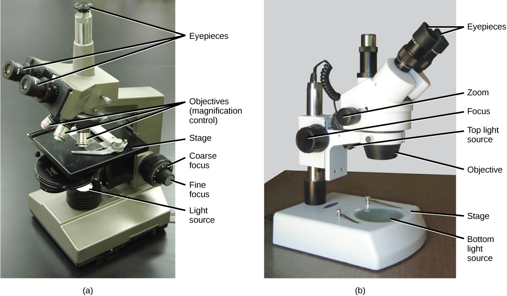
In contrast to light microscopes, electron microscopes use a beam of electrons instead of a beam of light. Not only does this allow for higher magnification and, thus, more detail (Figure 3.3), it also provides higher resolving power. Preparation of a specimen for viewing under an electron microscope will kill it; therefore, live cells cannot be viewed using this type of microscopy. In addition, the electron beam moves best in a vacuum, making it impossible to view living materials.
In a scanning electron microscope, a beam of electrons moves back and forth across a cell's surface, rendering the details of cell surface characteristics by reflection. Cells and other structures are usually coated with a metal like gold. In a transmission electron microscope, the electron beam is transmitted through the cell and provides details of a cell's internal structures. As you might imagine, electron microscopes are significantly more bulky and expensive than are light microscopes.
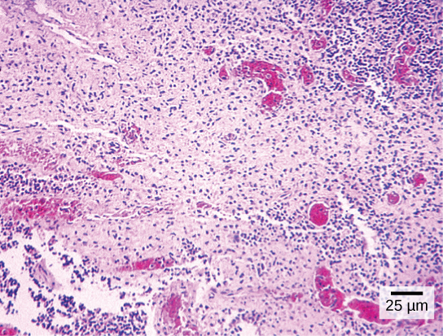
Cytotechnologists (cyto- = cell) are professionals who study cells through microscopic examinations and other laboratory tests. They are trained to determine which cellular changes are within normal limits or are abnormal. Their focus is not limited to cervical cells; they study cellular specimens that come from all organs. When they notice abnormalities, they consult a pathologist, who is a medical doctor who can make a clinical diagnosis.
Cytotechnologists play vital roles in saving people's lives. When abnormalities are discovered early, a patient's treatment can begin sooner, which usually increases the chances of successful treatment.
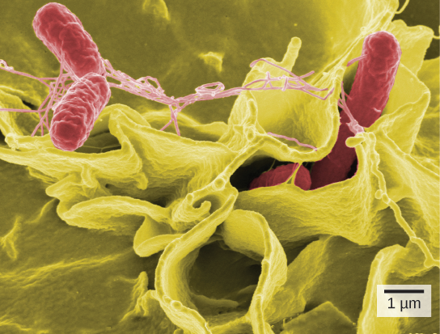
The microscopes we use today are far more complex than those used in the 1600s by Antony van Leeuwenhoek, a Dutch shopkeeper who had great skill in crafting lenses. Despite the limitations of his now-ancient lenses, van Leeuwenhoek observed the movements of protists (a type of single-celled organism) and sperm, which he collectively termed "animalcules."
In a 1665 publication called Micrographia, experimental scientist Robert Hooke coined the term "cell" (from the Latin cella, meaning "small room") for the box-like structures he observed when viewing cork tissue through a lens. In the 1670s, van Leeuwenhoek discovered bacteria and protozoa. Later advances in lenses and microscope construction enabled other scientists to see different components inside cells.
By the late 1830s, botanist Matthias Schleiden and zoologist Theodor Schwann were studying tissues and proposed the unified cell theory, which states that all living things are composed of one or more cells, that the cell is the basic unit of life, and that all new cells arise from existing cells. These principles still stand today.
2. The cell is the basic unit of life.
3. All new cells arise from existing cells.

Complete the written checkpoint above to unlock the quiz.
- Name examples of prokaryotic and eukaryotic organisms
- Compare and contrast prokaryotic cells and eukaryotic cells
- Describe the relative sizes of different kinds of cells
Cells fall into one of two broad categories: prokaryotic and eukaryotic. The predominantly single-celled organisms of the domains Bacteria and Archaea are classified as prokaryotes (pro- = before; -karyon- = nucleus). Animal cells, plant cells, fungi, and protists are eukaryotes (eu- = true).
All cells share four common components: 1) a plasma membrane, an outer covering that separates the cell's interior from its surrounding environment; 2) cytoplasm, consisting of a jelly-like region within the cell in which other cellular components are found; 3) DNA, the genetic material of the cell; and 4) ribosomes, particles that synthesize proteins. However, prokaryotes differ from eukaryotic cells in several ways.
A prokaryotic cell is a simple, single-celled (unicellular) organism that lacks a nucleus, or any other membrane-bound organelle. We will shortly come to see that this is significantly different in eukaryotes. Prokaryotic DNA is found in the central part of the cell: a darkened region called the nucleoid (Figure 3.5).
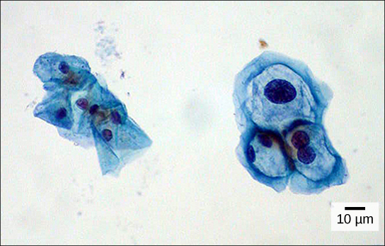
Unlike Archaea and eukaryotes, bacteria have a cell wall made of peptidoglycan, comprised of sugars and amino acids, and many have a polysaccharide capsule (Figure 3.5). The cell wall acts as an extra layer of protection, helps the cell maintain its shape, and prevents dehydration. The capsule enables the cell to attach to surfaces in its environment. Some prokaryotes have flagella, pili, or fimbriae. Flagella are used for locomotion, while most pili are used to exchange genetic material during a type of reproduction called conjugation.
In nature, the relationship between form and function is apparent at all levels, including the level of the cell, and this will become clear as we explore eukaryotic cells. The principle "form follows function" is found in many contexts. For example, birds and fish have streamlined bodies that allow them to move quickly through the medium in which they live, be it air or water. It means that, in general, one can deduce the function of a structure by looking at its form, because the two are matched.
A eukaryotic cell is a cell that has a membrane-bound nucleus and other membrane-bound compartments or sacs, called organelles, which have specialized functions. The word eukaryotic means "true kernel" or "true nucleus," alluding to the presence of the membrane-bound nucleus in these cells. The word "organelle" means "little organ," and, as already mentioned, organelles have specialized cellular functions, just as the organs of your body have specialized functions.
At 0.1–5.0 µm in diameter, prokaryotic cells are significantly smaller than eukaryotic cells, which have diameters ranging from 10–100 µm (Figure 3.6). The small size of prokaryotes allows ions and organic molecules that enter them to quickly spread to other parts of the cell. Similarly, any wastes produced within a prokaryotic cell can quickly move out. However, larger eukaryotic cells have evolved different structural adaptations to enhance cellular transport. Indeed, the large size of these cells would not be possible without these adaptations. In general, cell size is limited because volume increases much more quickly than does cell surface area. As a cell becomes larger, it becomes more and more difficult for the cell to acquire sufficient materials to support the processes inside the cell, because the relative size of the surface area across which materials must be transported declines.


Complete the written checkpoint above to unlock the quiz.
- Describe the structure of eukaryotic plant and animal cells
- State the role of the plasma membrane
- Describe the cytoplasm and its components
- Explain the three types of cytoskeletal fibers
- Describe the structure and function of the nucleus
- Distinguish flagella from cilia
At this point, it should be clear that eukaryotic cells have a more complex structure than do prokaryotic cells. Organelles allow for various functions to occur in the cell at the same time. Before discussing the functions of organelles within a eukaryotic cell, let us first examine two important components of the cell: the plasma membrane and the cytoplasm.
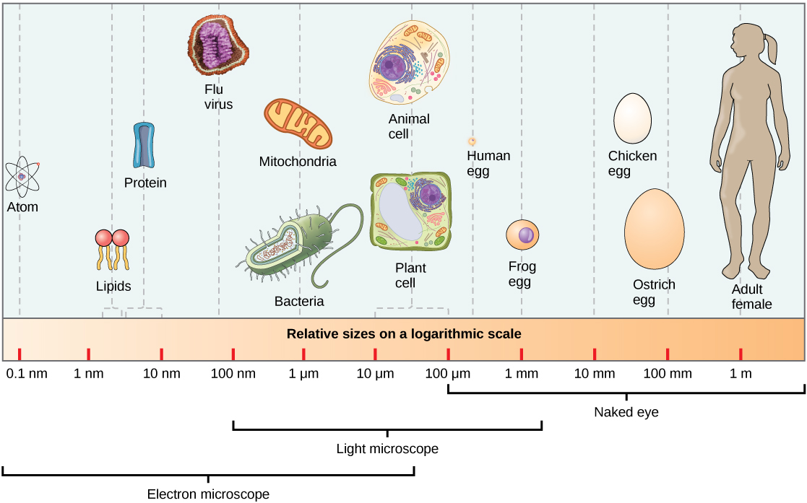
Like prokaryotes, eukaryotic cells have a plasma membrane (Figure 3.8) made up of a phospholipid bilayer with embedded proteins that separates the internal contents of the cell from its surrounding environment. A phospholipid is a lipid molecule composed of two fatty acid chains, a glycerol backbone, and a phosphate group. The plasma membrane regulates the passage of some substances, such as organic molecules, ions, and water, preventing the passage of some to maintain internal conditions, while actively bringing in or removing others. Other compounds move passively across the membrane.
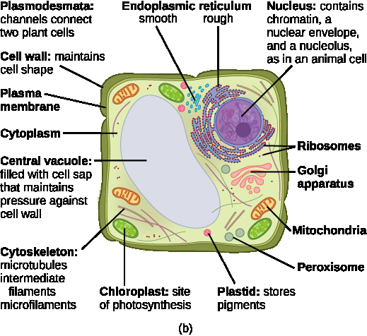
The plasma membranes of cells that specialize in absorption are folded into fingerlike projections called microvilli (singular = microvillus). This folding increases the surface area of the plasma membrane. Such cells are typically found lining the small intestine, the organ that absorbs nutrients from digested food. This is an excellent example of form matching the function of a structure.
People with celiac disease have an immune response to gluten, which is a protein found in wheat, barley, and rye. The immune response damages microvilli, and thus, afflicted individuals cannot absorb nutrients. This leads to malnutrition, cramping, and diarrhea. Patients suffering from celiac disease must follow a gluten-free diet.
The cytoplasm comprises the contents of a cell between the plasma membrane and the nuclear envelope (a structure to be discussed shortly). It is made up of organelles suspended in the gel-like cytosol, the cytoskeleton, and various chemicals (Figure 3.7). Even though the cytoplasm consists of 70 to 80 percent water, it has a semi-solid consistency, which comes from the proteins within it. However, proteins are not the only organic molecules found in the cytoplasm. Glucose and other simple sugars, polysaccharides, amino acids, nucleic acids, fatty acids, and derivatives of glycerol are found there too. Ions of sodium, potassium, calcium, and many other elements are also dissolved in the cytoplasm. Many metabolic reactions, including protein synthesis, take place in the cytoplasm.
If you were to remove all the organelles from a cell, would the plasma membrane and the cytoplasm be the only components left? No. Within the cytoplasm, there would still be ions and organic molecules, plus a network of protein fibers that helps to maintain the shape of the cell, secures certain organelles in specific positions, allows cytoplasm and vesicles to move within the cell, and enables unicellular organisms to move independently. Collectively, this network of protein fibers is known as the cytoskeleton. There are three types of fibers within the cytoskeleton: microfilaments, also known as actin filaments, intermediate filaments, and microtubules (Figure 3.9).
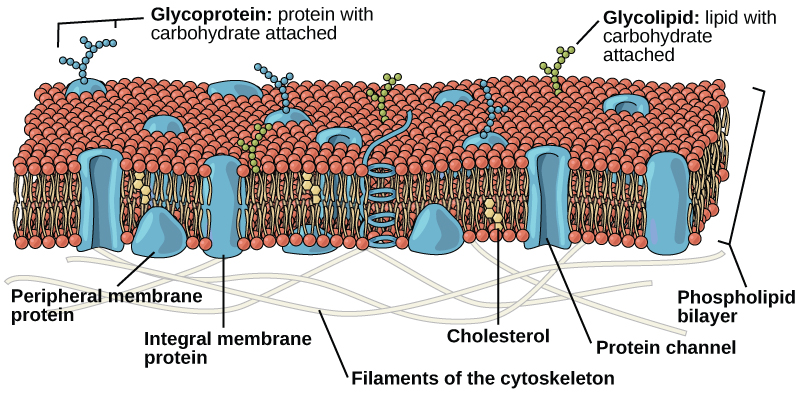
Microfilaments are the thinnest of the cytoskeletal fibers and function in moving cellular components, for example, during cell division. They also maintain the structure of microvilli, the extensive folding of the plasma membrane found in cells dedicated to absorption. These components are also common in muscle cells and are responsible for muscle cell contraction. Intermediate filaments are of intermediate diameter and have structural functions, such as maintaining the shape of the cell and anchoring organelles. Keratin, the compound that strengthens hair and nails, forms one type of intermediate filament. Microtubules are the thickest of the cytoskeletal fibers. These are hollow tubes that can dissolve and reform quickly. Microtubules guide organelle movement and are the structures that pull chromosomes to their poles during cell division. They are also the structural components of flagella and cilia. In cilia and flagella, the microtubules are organized as a circle of nine double microtubules on the outside and two microtubules in the center.
The centrosome is a region near the nucleus of animal cells that functions as a microtubule-organizing center. It contains a pair of centrioles, two structures that lie perpendicular to each other. Each centriole is a cylinder of nine triplets of microtubules.
The centrosome replicates itself before a cell divides, and the centrioles play a role in pulling the duplicated chromosomes to opposite ends of the dividing cell. However, the exact function of the centrioles in cell division is not clear, since cells that have the centrioles removed can still divide, and plant cells, which lack centrioles, are capable of cell division.
Flagella (singular = flagellum) are long, hair-like structures that extend from the plasma membrane and are used to move an entire cell, (for example, sperm, Euglena). When present, the cell has just one flagellum or a few flagella. When cilia (singular = cilium) are present, however, they are many in number and extend along the entire surface of the plasma membrane. They are short, hair-like structures that are used to move entire cells (such as paramecium) or move substances along the outer surface of the cell (for example, the cilia of cells lining the fallopian tubes that move the ovum toward the uterus, or cilia lining the cells of the respiratory tract that move particulate matter toward the throat that mucus has trapped).
Typically, the nucleus is the most prominent organelle in a cell (Figure 3.7). The nucleus (plural = nuclei) houses the cell's DNA in the form of chromatin and directs the synthesis of ribosomes and proteins. Let us look at it in more detail (Figure 3.10).
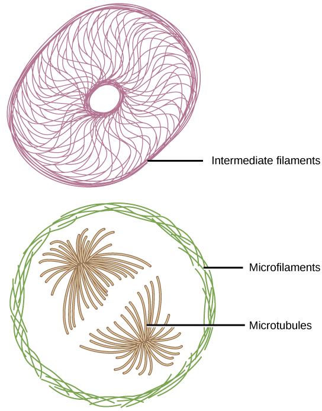
The nuclear envelope is a double-membrane structure that constitutes the outermost portion of the nucleus (Figure 3.10). Both the inner and outer membranes of the nuclear envelope are phospholipid bilayers.
The nuclear envelope is punctuated with pores that control the passage of ions, molecules, and RNA between the nucleoplasm and the cytoplasm.
To understand chromatin, it is helpful to first consider chromosomes. A chromosome is a structure within the nucleus that is made up of DNA, the hereditary material, and proteins. This combination of DNA and proteins is called chromatin. In eukaryotes, chromosomes are linear structures. Every species has a specific number of chromosomes in the nucleus of its body cells. For example, in humans, the chromosome number is 46, whereas in fruit flies, the chromosome number is eight.
Chromosomes are only visible and distinguishable from one another when the cell is getting ready to divide. When the cell is in the growth and maintenance phases of its life cycle, the chromosomes resemble an unwound, jumbled bunch of threads.
We already know that the nucleus directs the synthesis of ribosomes, but how does it do this? Some chromosomes have sections of DNA that encode ribosomal RNA. A darkly staining area within the nucleus, called the nucleolus (plural = nucleoli), aggregates the ribosomal RNA with associated proteins to assemble the ribosomal subunits that are then transported through the nuclear pores into the cytoplasm.
Complete the written checkpoint above to unlock the quiz.
- Summarize the functions of the major cell organelles
- Describe the endomembrane system and its components
- Distinguish between rough and smooth endoplasmic reticulum
- Explain the role of the Golgi apparatus
- Describe the functions of mitochondria and chloroplasts
- Compare and contrast animal and plant cell structures
The endomembrane system (endo = within) is a group of membranes and organelles (Figure 3.13) in eukaryotic cells that work together to modify, package, and transport lipids and proteins. It includes the nuclear envelope, lysosomes, and vesicles, the endoplasmic reticulum and Golgi apparatus, which we will cover shortly. Although not technically within the cell, the plasma membrane is included in the endomembrane system because, as you will see, it interacts with the other endomembranous organelles.
The endoplasmic reticulum (ER) (Figure 3.13) is a series of interconnected membranous tubules that collectively modify proteins and synthesize lipids. However, these two functions are performed in separate areas of the endoplasmic reticulum: the rough endoplasmic reticulum and the smooth endoplasmic reticulum, respectively.
The hollow portion of the ER tubules is called the lumen or cisternal space. The membrane of the ER, which is a phospholipid bilayer embedded with proteins, is continuous with the nuclear envelope.
The rough endoplasmic reticulum (RER) is so named because the ribosomes attached to its cytoplasmic surface give it a studded appearance when viewed through an electron microscope.
The ribosomes synthesize proteins while attached to the ER, resulting in transfer of their newly synthesized proteins into the lumen of the RER where they undergo modifications such as folding or addition of sugars. The RER also makes phospholipids for cell membranes.
If the phospholipids or modified proteins are not destined to stay in the RER, they will be packaged within vesicles and transported from the RER by budding from the membrane (Figure 3.13). Since the RER is engaged in modifying proteins that will be secreted from the cell, it is abundant in cells that secrete proteins, such as the liver.
The smooth endoplasmic reticulum (SER) is continuous with the RER but has few or no ribosomes on its cytoplasmic surface (see Figure 3.7). The SER's functions include synthesis of carbohydrates, lipids (including phospholipids), and steroid hormones; detoxification of medications and poisons; alcohol metabolism; and storage of calcium ions.
We have already mentioned that vesicles can bud from the ER, but where do the vesicles go? Before reaching their final destination, the lipids or proteins within the transport vesicles need to be sorted, packaged, and tagged so that they wind up in the right place. The sorting, tagging, packaging, and distribution of lipids and proteins take place in the Golgi apparatus (also called the Golgi body), a series of flattened membranous sacs (Figure 3.11).
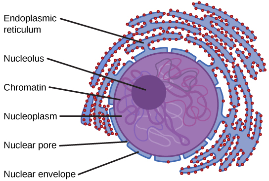
The Golgi apparatus has a receiving face near the endoplasmic reticulum and a releasing face on the side away from the ER, toward the cell membrane. The transport vesicles that form from the ER travel to the receiving face, fuse with it, and empty their contents into the lumen of the Golgi apparatus. As the proteins and lipids travel through the Golgi, they undergo further modifications. The most frequent modification is the addition of short chains of sugar molecules. The newly modified proteins and lipids are then tagged with small molecular groups to enable them to be routed to their proper destinations.
Finally, the modified and tagged proteins are packaged into vesicles that bud from the opposite face of the Golgi. While some of these vesicles, transport vesicles, deposit their contents into other parts of the cell where they will be used, others, secretory vesicles, fuse with the plasma membrane and release their contents outside the cell.
The amount of Golgi in different cell types again illustrates that form follows function within cells. Cells that engage in a great deal of secretory activity (such as cells of the salivary glands that secrete digestive enzymes or cells of the immune system that secrete antibodies) have an abundant number of Golgi.
In plant cells, the Golgi has an additional role of synthesizing polysaccharides, some of which are incorporated into the cell wall and some of which are used in other parts of the cell.
In animal cells, the lysosomes are the cell's "garbage disposal." Digestive enzymes within the lysosomes aid the breakdown of proteins, polysaccharides, lipids, nucleic acids, and even worn-out organelles. In single-celled eukaryotes, lysosomes are important for digestion of the food they ingest and the recycling of organelles. These enzymes are active at a much lower pH (more acidic) than those located in the cytoplasm. Many reactions that take place in the cytoplasm could not occur at a low pH, thus the advantage of compartmentalizing the eukaryotic cell into organelles is apparent.
Lysosomes also use their hydrolytic enzymes to destroy disease-causing organisms that might enter the cell. A good example of this occurs in a group of white blood cells called macrophages, which are part of your body's immune system. In a process known as phagocytosis, a section of the plasma membrane of the macrophage invaginates (folds in) and engulfs a pathogen. The invaginated section, with the pathogen inside, then pinches itself off from the plasma membrane and becomes a vesicle. The vesicle fuses with a lysosome. The lysosome's hydrolytic enzymes then destroy the pathogen (Figure 3.12).
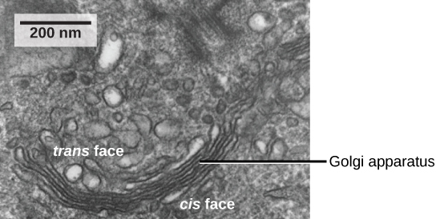
Vesicles and vacuoles are membrane-bound sacs that function in storage and transport. Vacuoles are somewhat larger than vesicles, and the membrane of a vacuole does not fuse with the membranes of other cellular components. Vesicles can fuse with other membranes within the cell system. Additionally, enzymes within plant vacuoles can break down macromolecules.
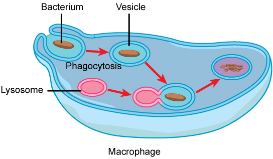
Ribosomes are the cellular structures responsible for protein synthesis. When viewed through an electron microscope, free ribosomes appear as either clusters or single tiny dots floating freely in the cytoplasm. Ribosomes may be attached to either the cytoplasmic side of the plasma membrane or the cytoplasmic side of the endoplasmic reticulum (Figure 3.7). Electron microscopy has shown that ribosomes consist of large and small subunits. Ribosomes are enzyme complexes that are responsible for protein synthesis.
Because protein synthesis is essential for all cells, ribosomes are found in practically every cell, although they are smaller in prokaryotic cells. They are particularly abundant in immature red blood cells for the synthesis of hemoglobin, which functions in the transport of oxygen throughout the body.
Mitochondria (singular = mitochondrion) are often called the "powerhouses" or "energy factories" of a cell because they are responsible for making adenosine triphosphate (ATP), the cell's main energy-carrying molecule. The formation of ATP from the breakdown of glucose is known as cellular respiration. Mitochondria are oval-shaped, double-membrane organelles (Figure 3.14) that have their own ribosomes and DNA. Each membrane is a phospholipid bilayer embedded with proteins. The inner layer has folds called cristae, which increase the surface area of the inner membrane. The area surrounded by the folds is called the mitochondrial matrix. The cristae and the matrix have different roles in cellular respiration.
In keeping with our theme of form following function, it is important to point out that muscle cells have a very high concentration of mitochondria because muscle cells need a lot of energy to contract.
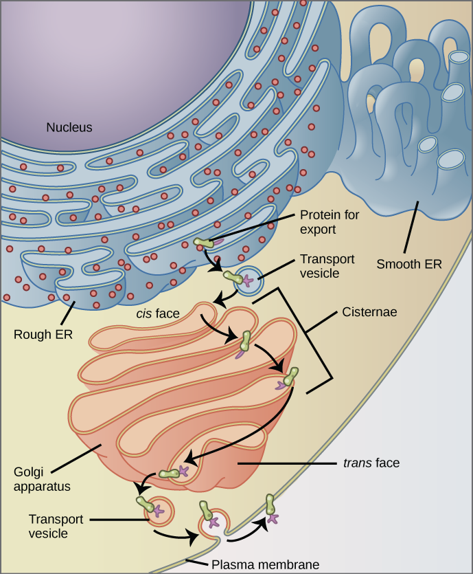
Peroxisomes are small, round organelles enclosed by single membranes. They carry out oxidation reactions that break down fatty acids and amino acids. They also detoxify many poisons that may enter the body. Alcohol is detoxified by peroxisomes in liver cells. A byproduct of these oxidation reactions is hydrogen peroxide, H2O2, which is contained within the peroxisomes to prevent the chemical from causing damage to cellular components outside of the organelle. Hydrogen peroxide is safely broken down by peroxisomal enzymes into water and oxygen.
Despite their fundamental similarities, there are some striking differences between animal and plant cells (see Table 3.1). Animal cells have centrioles, centrosomes (discussed under the cytoskeleton), and lysosomes, whereas plant cells do not. Plant cells have a cell wall, chloroplasts, plasmodesmata, and plastids used for storage, and a large central vacuole, whereas animal cells do not.
In Figure 3.7b, the diagram of a plant cell, you see a structure external to the plasma membrane called the cell wall. The cell wall is a rigid covering that protects the cell, provides structural support, and gives shape to the cell. Fungal and protist cells also have cell walls.
While the chief component of prokaryotic cell walls is peptidoglycan, the major organic molecule in the plant cell wall is cellulose, a polysaccharide made up of long, straight chains of glucose units. When nutritional information refers to dietary fiber, it is referring to the cellulose content of food.
Like mitochondria, chloroplasts also have their own DNA and ribosomes. Chloroplasts function in photosynthesis and can be found in eukaryotic cells such as plants and algae. In photosynthesis, carbon dioxide, water, and light energy are used to make glucose and oxygen. This is the major difference between plants and animals: Plants (autotrophs) are able to make their own food, like glucose, whereas animals (heterotrophs) must rely on other organisms for their organic compounds or food source.
Like mitochondria, chloroplasts have outer and inner membranes, but within the space enclosed by a chloroplast's inner membrane is a set of interconnected and stacked, fluid-filled membrane sacs called thylakoids (Figure 3.15). Each stack of thylakoids is called a granum (plural = grana). The fluid enclosed by the inner membrane and surrounding the grana is called the stroma.
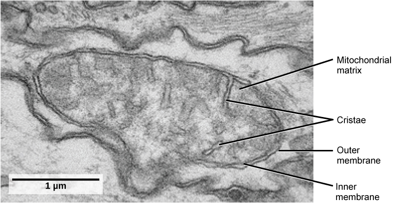
The chloroplasts contain a green pigment called chlorophyll, which captures the energy of sunlight for photosynthesis. Like plant cells, photosynthetic protists also have chloroplasts. Some bacteria also perform photosynthesis, but they do not have chloroplasts. Their photosynthetic pigments are located in the thylakoid membrane within the cell itself.
We have mentioned that both mitochondria and chloroplasts contain DNA and ribosomes. Have you wondered why? Strong evidence points to endosymbiosis as the explanation.
Symbiosis is a relationship in which organisms from two separate species live in close association and typically exhibit specific adaptations to each other. Endosymbiosis (endo- = within) is a relationship in which one organism lives inside the other. Endosymbiotic relationships abound in nature. Microbes that produce vitamin K live inside the human gut. This relationship is beneficial for us because we are unable to synthesize vitamin K. It is also beneficial for the microbes because they are protected from other organisms and are provided a stable habitat and abundant food by living within the large intestine.
Scientists have long noticed that bacteria, mitochondria, and chloroplasts are similar in size and have other similar features. In the 1950s and 1960s, scientists discovered that mitochondria and chloroplasts have their own DNA and ribosomes, just as bacteria do. In 1967, Lynn Margulis used microbial evidence in her proposal of endosymbiotic theory, which indicated that these organelles originated from separate organisms. Although Margulis's work was met with resistance, this basic component of this once-revolutionary hypothesis is now widely accepted. Scientists believe that host cells and bacteria formed a mutually beneficial endosymbiotic relationship when the host cells ingested aerobic bacteria and cyanobacteria but did not destroy them. Through evolution, these ingested bacteria became more specialized in their functions, with the aerobic bacteria becoming mitochondria and the photosynthetic bacteria becoming chloroplasts.
Previously, we mentioned vacuoles as essential components of plant cells. If you look at Figure 3.7, you will see that plant cells each have a large, central vacuole that occupies most of the cell. The central vacuole plays a key role in regulating the cell's concentration of water in changing environmental conditions. In plant cells, the liquid inside the central vacuole provides turgor pressure, which is the outward pressure caused by the fluid inside the cell. Have you ever noticed that if you forget to water a plant for a few days, it wilts? That is because as the water concentration in the soil becomes lower than the water concentration in the plant, water moves out of the central vacuoles and cytoplasm and into the soil. As the central vacuole shrinks, it leaves the cell wall unsupported. This loss of support to the cell walls of a plant results in the wilted appearance. Additionally, this fluid has a very bitter taste, which discourages consumption by insects and animals. The central vacuole also functions to store proteins in developing seed cells.
| Cell Component | Function | Prokaryotes? | Animal Cells? | Plant Cells? |
|---|---|---|---|---|
| Plasma membrane | Separates cell from external environment; controls passage of organic molecules, ions, water, oxygen, and wastes into and out of the cell | Yes | Yes | Yes |
| Cytoplasm | Provides structure to cell; site of many metabolic reactions; medium in which organelles are found | Yes | Yes | Yes |
| Nucleoid | Location of DNA | Yes | No | No |
| Nucleus | Cell organelle that houses DNA and directs synthesis of ribosomes and proteins | No | Yes | Yes |
| Ribosomes | Protein synthesis | Yes | Yes | Yes |
| Mitochondria | ATP production/cellular respiration | No | Yes | Yes |
| Peroxisomes | Oxidizes and breaks down fatty acids and amino acids, and detoxifies poisons | No | Yes | Yes |
| Vesicles and vacuoles | Storage and transport; digestive function in plant cells | No | Yes | Yes |
| Centrosome | Unspecified role in cell division in animal cells; organizing center of microtubules in animal cells | No | Yes | No |
| Lysosomes | Digestion of macromolecules; recycling of worn-out organelles | No | Yes | No |
| Cell wall | Protection, structural support and maintenance of cell shape | Yes, primarily peptidoglycan in bacteria but not Archaea | No | Yes, primarily cellulose |
| Chloroplasts | Photosynthesis | No | No | Yes |
| Endoplasmic reticulum | Modifies proteins and synthesizes lipids | No | Yes | Yes |
| Golgi apparatus | Modifies, sorts, tags, packages, and distributes lipids and proteins | No | Yes | Yes |
| Cytoskeleton | Maintains cell's shape, secures organelles in specific positions, allows cytoplasm and vesicles to move within cell, and enables unicellular organisms to move independently | Yes | Yes | Yes |
| Flagella | Cellular locomotion | Some | Some | No, except for some plant sperm |
| Cilia | Cellular locomotion, movement of particles along extracellular surface of plasma membrane, and filtration | No | Some | No |
In your own words, explain the endosymbiotic theory. What evidence supports the idea that mitochondria and chloroplasts originated from bacteria? How does this theory connect to the observation that these organelles have their own DNA and ribosomes?
- Describe the extracellular matrix of animal cells
- Identify the different types of intercellular junctions
- Understand the fluid mosaic model of membranes
- Describe the functions of phospholipids, proteins, and carbohydrates in membranes
Most animal cells release materials into the extracellular space. The primary components of these materials are glycoproteins and the protein collagen. Collectively, these materials are called the extracellular matrix (Figure 3.16). Not only does the extracellular matrix hold the cells together to form a tissue, but it also allows the cells within the tissue to communicate with each other.
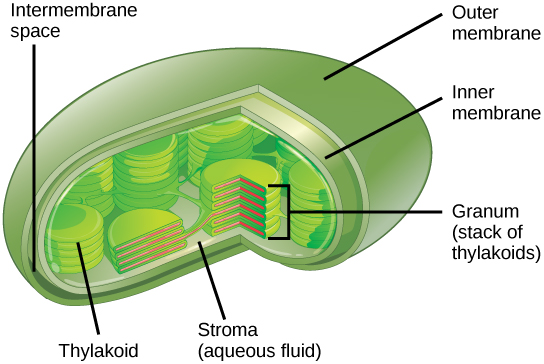
Blood clotting provides an example of the role of the extracellular matrix in cell communication. When the cells lining a blood vessel are damaged, they display a protein receptor called tissue factor. When tissue factor binds with another factor in the extracellular matrix, it causes platelets to adhere to the wall of the damaged blood vessel, stimulates adjacent smooth muscle cells in the blood vessel to contract (thus constricting the blood vessel), and initiates a series of steps that stimulate the platelets to produce clotting factors.
Cells can also communicate with each other by direct contact, referred to as intercellular junctions. There are some differences in the ways that plant and animal cells do this. Plasmodesmata (singular = plasmodesma) are junctions between plant cells, whereas animal cell contacts include tight and gap junctions, and desmosomes.
In general, long stretches of the plasma membranes of neighboring plant cells cannot touch one another because they are separated by the cell walls surrounding each cell. Plasmodesmata are numerous channels that pass between the cell walls of adjacent plant cells, connecting their cytoplasm and enabling signal molecules and nutrients to be transported from cell to cell (Figure 3.17a).
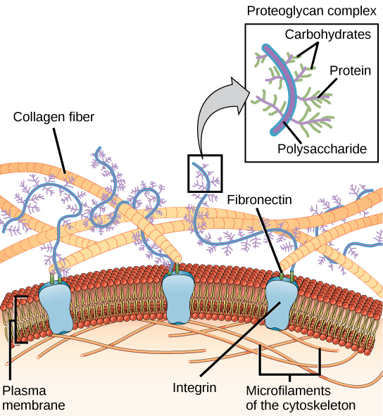
A tight junction is a watertight seal between two adjacent animal cells (Figure 3.17b). Proteins hold the cells tightly against each other. This tight adhesion prevents materials from leaking between the cells. Tight junctions are typically found in the epithelial tissue that lines internal organs and cavities, and composes most of the skin. For example, the tight junctions of the epithelial cells lining the urinary bladder prevent urine from leaking into the extracellular space.
Also found only in animal cells are desmosomes, which act like spot welds between adjacent epithelial cells (Figure 3.17c). They keep cells together in a sheet-like formation in organs and tissues that stretch, like the skin, heart, and muscles.
Gap junctions in animal cells are like plasmodesmata in plant cells in that they are channels between adjacent cells that allow for the transport of ions, nutrients, and other substances that enable cells to communicate (Figure 3.17d). Structurally, however, gap junctions and plasmodesmata differ.
A cell's plasma membrane defines the boundary of the cell and determines the nature of its contact with the environment. Cells exclude some substances, take in others, and excrete still others, all in controlled quantities. Plasma membranes enclose the borders of cells, but rather than being a static bag, they are dynamic and constantly in flux. The plasma membrane must be sufficiently flexible to allow certain cells, such as red blood cells and white blood cells, to change shape as they pass through narrow capillaries. These are the more obvious functions of a plasma membrane. In addition, the surface of the plasma membrane carries markers that allow cells to recognize one another, which is vital as tissues and organs form during early development, and which later plays a role in the "self" versus "non-self" distinction of the immune response.
The plasma membrane also carries receptors, which are attachment sites for specific substances that interact with the cell. Each receptor is structured to bind with a specific substance. For example, surface receptors of the membrane create changes in the interior, such as changes in enzymes of metabolic pathways. These metabolic pathways might be vital for providing the cell with energy, making specific substances for the cell, or breaking down cellular waste or toxins for disposal. Receptors on the plasma membrane's exterior surface interact with hormones or neurotransmitters, and allow their messages to be transmitted into the cell. Some recognition sites are used by viruses as attachment points. Although they are highly specific, pathogens like viruses may evolve to exploit receptors to gain entry to a cell by mimicking the specific substance that the receptor is meant to bind. This specificity helps to explain why human immunodeficiency virus (HIV) or any of the five types of hepatitis viruses invade only specific cells.
In 1972, S. J. Singer and Garth L. Nicolson proposed a new model of the plasma membrane that, compared to earlier understanding, better explained both microscopic observations and the function of the plasma membrane. This was called the fluid mosaic model. The model has evolved somewhat over time, but still best accounts for the structure and functions of the plasma membrane as we now understand them. The fluid mosaic model describes the structure of the plasma membrane as a mosaic of components—including phospholipids, cholesterol, proteins, and carbohydrates—in which the components are able to flow and change position, while maintaining the basic integrity of the membrane. Both phospholipid molecules and embedded proteins are able to diffuse rapidly and laterally in the membrane. The fluidity of the plasma membrane is necessary for the activities of certain enzymes and transport molecules within the membrane. Plasma membranes range from 5–10 nm thick. As a comparison, human red blood cells, visible via light microscopy, are approximately 8 µm thick, or approximately 1,000 times thicker than a plasma membrane. (Figure 3.18)
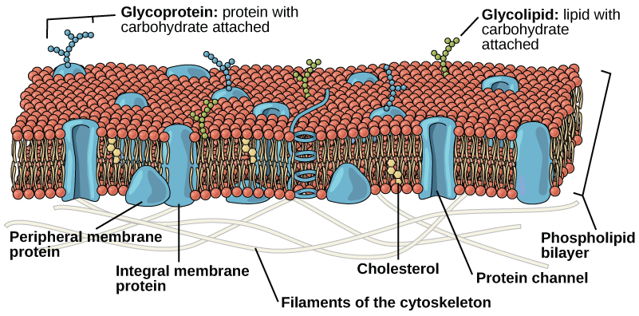
The plasma membrane is made up primarily of a bilayer of phospholipids with embedded proteins, carbohydrates, glycolipids, and glycoproteins, and, in animal cells, cholesterol. The amount of cholesterol in animal plasma membranes regulates the fluidity of the membrane and changes based on the temperature of the cell's environment. In other words, cholesterol acts as antifreeze in the cell membrane and is more abundant in animals that live in cold climates.
The main fabric of the membrane is composed of two layers of phospholipid molecules, and the polar ends of these molecules (which look like a collection of balls in an artist's rendition of the model) (Figure 3.18) are in contact with aqueous fluid both inside and outside the cell. Thus, both surfaces of the plasma membrane are hydrophilic. In contrast, the interior of the membrane, between its two surfaces, is a hydrophobic or nonpolar region because of the fatty acid tails. This region has no attraction for water or other polar molecules.
Proteins make up the second major chemical component of plasma membranes. Integral proteins are embedded in the plasma membrane and may span all or part of the membrane. Integral proteins may serve as channels or pumps to move materials into or out of the cell. Peripheral proteins are found on the exterior or interior surfaces of membranes, attached either to integral proteins or to phospholipid molecules. Both integral and peripheral proteins may serve as enzymes, as structural attachments for the fibers of the cytoskeleton, or as part of the cell's recognition sites.
Carbohydrates are the third major component of plasma membranes. They are always found on the exterior surface of cells and are bound either to proteins (forming glycoproteins) or to lipids (forming glycolipids). These carbohydrate chains may consist of 2–60 monosaccharide units and may be either straight or branched. Along with peripheral proteins, carbohydrates form specialized sites on the cell surface that allow cells to recognize each other.
Specific glycoprotein molecules exposed on the surface of the cell membranes of host cells are exploited by many viruses to infect specific organs. For example, HIV is able to penetrate the plasma membranes of specific kinds of white blood cells called T-helper cells and monocytes, as well as some cells of the central nervous system. The hepatitis virus attacks only liver cells.
These viruses are able to invade these cells, because the cells have binding sites on their surfaces that the viruses have exploited with equally specific glycoproteins in their coats. (Figure 3.19). The cell is tricked by the mimicry of the virus coat molecules, and the virus is able to enter the cell. Other recognition sites on the virus's surface interact with the human immune system, prompting the body to produce antibodies. Antibodies are made in response to the antigens (or proteins associated with invasive pathogens). These same sites serve as places for antibodies to attach, and either destroy or inhibit the activity of the virus. Unfortunately, these sites on HIV are encoded by genes that change quickly, making the production of an effective vaccine against the virus very difficult. The virus population within an infected individual quickly evolves through mutation into different populations, or variants, distinguished by differences in these recognition sites. This rapid change of viral surface markers decreases the effectiveness of the person's immune system in attacking the virus, because the antibodies will not recognize the new variations of the surface patterns.
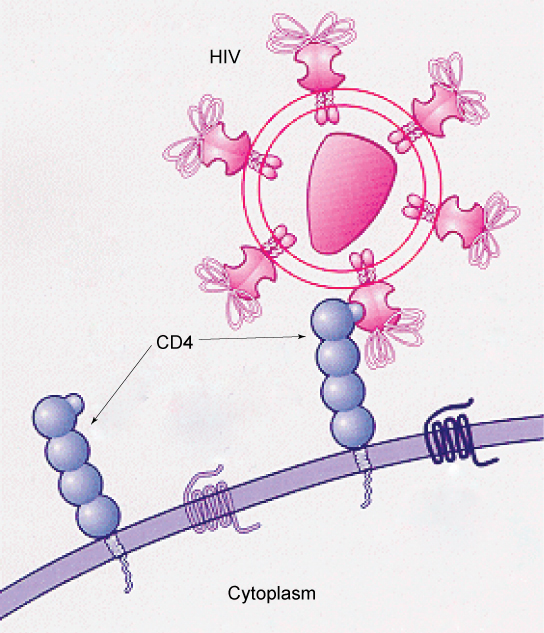
Compare and contrast the four types of intercellular junctions (plasmodesmata, tight junctions, desmosomes, and gap junctions). Where in the body would you expect to find each type, and why? Also explain how the fluid mosaic model describes membrane structure.
- Explain why and how passive transport occurs
- Understand the processes of osmosis and diffusion
- Define tonicity and describe its relevance to passive transport
Plasma membranes must allow certain substances to enter and leave a cell, while preventing harmful material from entering and essential material from leaving. In other words, plasma membranes are selectively permeable (semipermeable)—they allow some substances through but not others. If they were to lose this selectivity, the cell would no longer be able to sustain itself, and it would be destroyed. Some cells require larger amounts of specific substances than do other cells; they must have a way of obtaining these materials from the extracellular fluids. This may happen passively, as certain materials move back and forth, or the cell may have special mechanisms that ensure transport. Most cells expend most of their energy, in the form of adenosine triphosphate (ATP), to create and maintain an uneven distribution of ions on the opposite sides of their membranes. The structure of the plasma membrane contributes to these functions, but it also presents some problems.
The most direct forms of membrane transport are passive. Passive transport is a naturally occurring phenomenon and does not require the cell to expend energy to accomplish the movement. In passive transport, substances move from an area of higher concentration to an area of lower concentration in a process called diffusion. A physical space in which there is a different concentration of a single substance is said to have a concentration gradient.
Plasma membranes are asymmetric, meaning that despite the mirror image formed by the phospholipids, the interior of the membrane is not identical to the exterior of the membrane. Integral proteins that act as channels or pumps work in one direction. Carbohydrates, attached to lipids or proteins, are also found on the exterior surface of the plasma membrane. These carbohydrate complexes help the cell bind substances that the cell needs in the extracellular fluid. This adds considerably to the selective nature of plasma membranes.
Recall that plasma membranes have hydrophilic and hydrophobic regions. This characteristic helps the movement of certain materials through the membrane and hinders the movement of others. Lipid-soluble material can easily slip through the hydrophobic lipid core of the membrane. Substances such as the fat-soluble vitamins A, D, E, and K readily pass through the plasma membranes in the digestive tract and other tissues. Fat-soluble drugs also gain easy entry into cells and are readily transported into the body's tissues and organs. Molecules of oxygen and carbon dioxide have no charge and pass through by simple diffusion.
Polar substances present problems for the membrane. While some polar molecules connect easily with the outside of a cell, they cannot readily pass through the lipid core of the plasma membrane. Additionally, whereas small ions could easily slip through the spaces in the mosaic of the membrane, their charge prevents them from doing so. Ions such as sodium, potassium, calcium, and chloride must have a special means of penetrating plasma membranes. Simple sugars and amino acids also need help with transport across plasma membranes.
Diffusion is a passive process of transport. A single substance tends to move from an area of high concentration to an area of low concentration until the concentration is equal across the space. You are familiar with diffusion of substances through the air. For example, think about someone opening a bottle of perfume in a room filled with people. The perfume is at its highest concentration in the bottle and is at its lowest at the edges of the room. The perfume vapor will diffuse, or spread away, from the bottle, and gradually, more and more people will smell the perfume as it spreads. Materials move within the cell's cytosol by diffusion, and certain materials move through the plasma membrane by diffusion (Figure 3.20). Diffusion expends no energy. Rather the different concentrations of materials in different areas are a form of potential energy, and diffusion is the dissipation of that potential energy as materials move down their concentration gradients, from high to low.
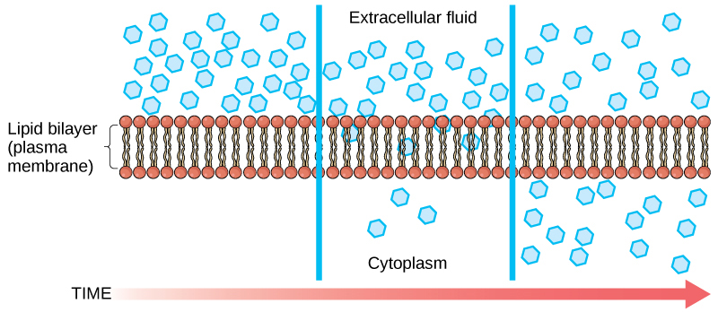
Each separate substance in a medium, such as the extracellular fluid, has its own concentration gradient, independent of the concentration gradients of other materials. Additionally, each substance will diffuse according to that gradient.
Several factors affect the rate of diffusion:
- Extent of the concentration gradient: The greater the difference in concentration, the more rapid the diffusion. The closer the distribution of the material gets to equilibrium, the slower the rate of diffusion becomes.
- Mass of the molecules diffusing: More massive molecules move more slowly, because it is more difficult for them to move between the molecules of the substance they are moving through; therefore, they diffuse more slowly.
- Temperature: Higher temperatures increase the energy and therefore the movement of the molecules, increasing the rate of diffusion.
- Solvent density: As the density of the solvent increases, the rate of diffusion decreases. The molecules slow down because they have a more difficult time getting through the denser medium.
In facilitated transport, also called facilitated diffusion, material moves across the plasma membrane with the assistance of transmembrane proteins down a concentration gradient (from high to low concentration) without the expenditure of cellular energy. However, the substances that undergo facilitated transport would otherwise not diffuse easily or quickly across the plasma membrane. The solution to moving polar substances and other substances across the plasma membrane rests in the proteins that span its surface. The material being transported is first attached to protein or glycoprotein receptors on the exterior surface of the plasma membrane. This allows the material that is needed by the cell to be removed from the extracellular fluid. The substances are then passed to specific integral proteins that facilitate their passage, because they form channels or pores that allow certain substances to pass through the membrane. The integral proteins involved in facilitated transport are collectively referred to as transport proteins, and they function as either channels for the material or carriers.
Osmosis is the movement of free water molecules through a semipermeable membrane according to the water's concentration gradient across the membrane, which is inversely proportional to the solutes' concentration. Whereas diffusion transports material across membranes and within cells, osmosis transports only water across a membrane and the membrane limits the diffusion of solutes in the water. Osmosis is a special case of diffusion. Water, like other substances, moves from an area of high concentration of free water molecules to one of low free water molecule concentration. Imagine a beaker with a semipermeable membrane, separating the two sides or halves (Figure 3.21). On both sides of the membrane, the water level is the same, but there are different concentrations on each side of a dissolved substance, or solute, that cannot cross the membrane. If the volume of the water is the same, but the concentrations of solute are different, then there are also different concentrations of water, the solvent, on either side of the membrane.
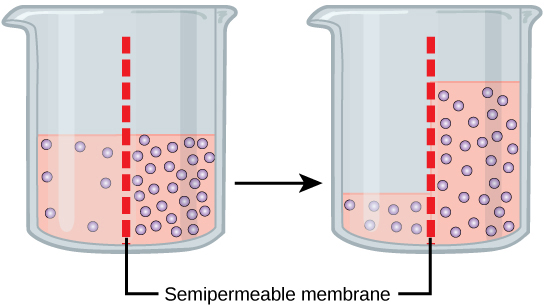
A principle of diffusion is that the molecules move around and will spread evenly throughout the medium if they can. However, only the material capable of getting through the membrane will diffuse through it. In this example, the solute cannot diffuse through the membrane, but the water can. Water has a concentration gradient in this system. Therefore, water will diffuse down its concentration gradient, crossing the membrane to the side where it is less concentrated. This diffusion of water through the membrane—osmosis—will continue until the concentration gradient of water goes to zero. Osmosis proceeds constantly in living systems.
Tonicity describes the amount of solute in a solution. The measure of the tonicity of a solution, or the total amount of solutes dissolved in a specific amount of solution, is called its osmolarity. Three terms—hypotonic, isotonic, and hypertonic—are used to relate the osmolarity of a cell to the osmolarity of the extracellular fluid that contains the cells. In a hypotonic solution, such as tap water, the extracellular fluid has a lower concentration of solutes than the fluid inside the cell, and water enters the cell. (In living systems, the point of reference is always the cytoplasm, so the prefix hypo- means that the extracellular fluid has a lower concentration of solutes, or a lower osmolarity, than the cell cytoplasm.) It also means that the extracellular fluid has a higher concentration of water than does the cell. In this situation, water will follow its concentration gradient and enter the cell. This may cause an animal cell to burst, or lyse.
In a hypertonic solution (the prefix hyper- refers to the extracellular fluid having a higher concentration of solutes than the cell's cytoplasm), the fluid contains less water than the cell does, such as seawater. Because the cell has a lower concentration of solutes, the water will leave the cell. In effect, the solute is drawing the water out of the cell. This may cause an animal cell to shrivel, or crenate.
In an isotonic solution, the extracellular fluid has the same osmolarity as the cell. If the concentration of solutes of the cell matches that of the extracellular fluid, there will be no net movement of water into or out of the cell. Blood cells in hypertonic, isotonic, and hypotonic solutions take on characteristic appearances (Figure 3.22).
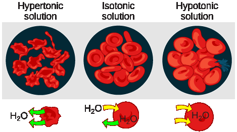
Some organisms, such as plants, fungi, bacteria, and some protists, have cell walls that surround the plasma membrane and prevent cell lysis. The plasma membrane can only expand to the limit of the cell wall, so the cell will not lyse. In fact, the cytoplasm in plants is always slightly hypertonic compared to the cellular environment, and water will always enter a cell if water is available. This influx of water produces turgor pressure, which stiffens the cell walls of the plant (Figure 3.23). In nonwoody plants, turgor pressure supports the plant. If the plant cells become hypertonic, as occurs in drought or if a plant is not watered adequately, water will leave the cell. Plants lose turgor pressure in this condition and wilt.
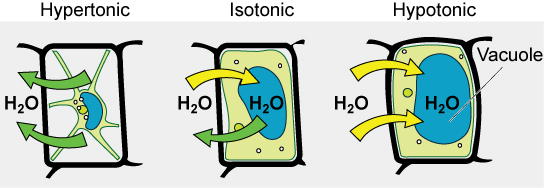
A red blood cell is placed in a solution and it begins to swell and eventually bursts. Was the solution hypotonic, isotonic, or hypertonic? Explain your reasoning using the concepts of osmosis, concentration gradients, and tonicity. What would happen to a plant cell in the same solution, and why?
- Understand how electrochemical gradients affect ions
- Describe endocytosis, including phagocytosis, pinocytosis, and receptor-mediated endocytosis
- Understand the process of exocytosis
Active transport mechanisms require the use of the cell's energy, usually in the form of adenosine triphosphate (ATP). If a substance must move into the cell against its concentration gradient, that is, if the concentration of the substance inside the cell must be greater than its concentration in the extracellular fluid, the cell must use energy to move the substance. Some active transport mechanisms move small-molecular weight material, such as ions, through the membrane.
In addition to moving small ions and molecules through the membrane, cells also need to remove and take in larger molecules and particles. Some cells are even capable of engulfing entire unicellular microorganisms. You might have correctly hypothesized that the uptake and release of large particles by the cell requires energy. A large particle, however, cannot pass through the membrane, even with energy supplied by the cell.
We have discussed simple concentration gradients—differential concentrations of a substance across a space or a membrane—but in living systems, gradients are more complex. Because cells contain proteins, most of which are negatively charged, and because ions move into and out of cells, there is an electrical gradient, a difference of charge, across the plasma membrane. The interior of living cells is electrically negative with respect to the extracellular fluid in which they are bathed; at the same time, cells have higher concentrations of potassium (K⁺) and lower concentrations of sodium (Na⁺) than does the extracellular fluid. Thus, in a living cell, the concentration gradient and electrical gradient of Na⁺ promotes diffusion of the ion into the cell, and the electrical gradient of Na⁺ (a positive ion) tends to drive it inward to the negatively charged interior. The situation is more complex, however, for other elements such as potassium. The electrical gradient of K⁺ promotes diffusion of the ion into the cell, but the concentration gradient of K⁺ promotes diffusion out of the cell (Figure 3.24). The combined gradient that affects an ion is called its electrochemical gradient, and it is especially important to muscle and nerve cells.
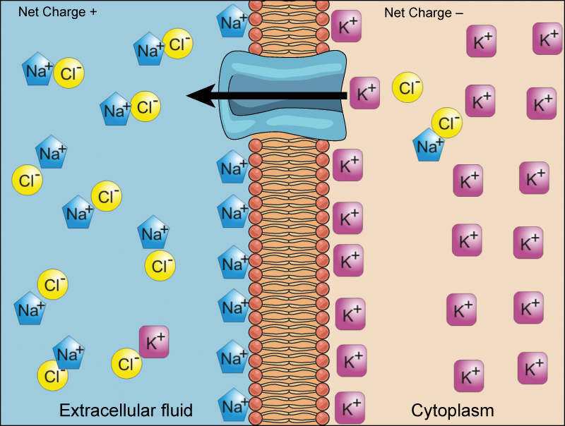
To move substances against a concentration or an electrochemical gradient, the cell must use energy. This energy is harvested from ATP that is generated through cellular metabolism. Active transport mechanisms, collectively called pumps or carrier proteins, work against electrochemical gradients. With the exception of ions, small substances constantly pass through plasma membranes. Active transport maintains concentrations of ions and other substances needed by living cells in the face of these passive changes. Much of a cell's supply of metabolic energy may be spent maintaining these processes. Because active transport mechanisms depend on cellular metabolism for energy, they are sensitive to many metabolic poisons that interfere with the supply of ATP.
Two mechanisms exist for the transport of small-molecular weight material and macromolecules. Primary active transport moves ions across a membrane and creates a difference in charge across that membrane. The primary active transport system uses ATP to move a substance, such as an ion, into the cell, and often at the same time, a second substance is moved out of the cell. The sodium-potassium pump, an important pump in animal cells, expends energy to move potassium ions into the cell and a different number of sodium ions out of the cell (Figure 3.25). The action of this pump results in a concentration and charge difference across the membrane.
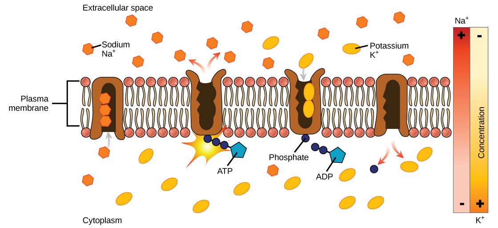
Secondary active transport describes the movement of material using the energy of the electrochemical gradient established by primary active transport. Using the energy of the electrochemical gradient created by the primary active transport system, other substances such as amino acids and glucose can be brought into the cell through membrane channels. ATP itself is formed through secondary active transport using a hydrogen ion gradient in the mitochondrion.
Endocytosis is a type of active transport that moves particles, such as large molecules, parts of cells, and even whole cells, into a cell. There are different variations of endocytosis, but all share a common characteristic: The plasma membrane of the cell invaginates, forming a pocket around the target particle. The pocket pinches off, resulting in the particle being contained in a newly created vacuole that is formed from the plasma membrane.
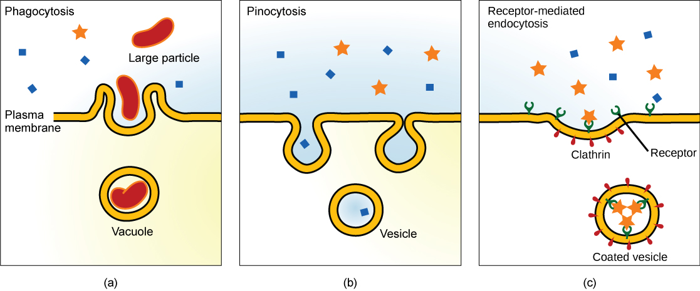
Phagocytosis is the process by which large particles, such as cells, are taken in by a cell. For example, when microorganisms invade the human body, a type of white blood cell called a neutrophil removes the invader through this process, surrounding and engulfing the microorganism, which is then destroyed by the neutrophil (Figure 3.26).
A variation of endocytosis is called pinocytosis. This literally means "cell drinking" and was named at a time when the assumption was that the cell was purposefully taking in extracellular fluid. In reality, this process takes in solutes that the cell needs from the extracellular fluid (Figure 3.26).
A targeted variation of endocytosis employs binding proteins in the plasma membrane that are specific for certain substances (Figure 3.26). The particles bind to the proteins and the plasma membrane invaginates, bringing the substance and the proteins into the cell. If passage across the membrane of the target of receptor-mediated endocytosis is ineffective, it will not be removed from the tissue fluids or blood. Instead, it will stay in those fluids and increase in concentration. Some human diseases are caused by a failure of receptor-mediated endocytosis. For example, the form of cholesterol termed low-density lipoprotein or LDL (also referred to as "bad" cholesterol) is removed from the blood by receptor-mediated endocytosis. In the human genetic disease familial hypercholesterolemia, the LDL receptors are defective or missing entirely. People with this condition have life-threatening levels of cholesterol in their blood, because their cells cannot clear the chemical from their blood.
In contrast to these methods of moving material into a cell is the process of exocytosis. Exocytosis is the opposite of the processes discussed above in that its purpose is to expel material from the cell into the extracellular fluid. A particle enveloped in membrane fuses with the interior of the plasma membrane. This fusion opens the membranous envelope to the exterior of the cell, and the particle is expelled into the extracellular space (Figure 3.27).
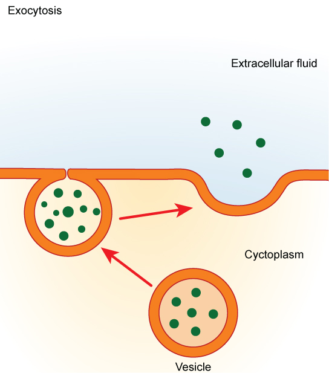
Explain the difference between phagocytosis, pinocytosis, and receptor-mediated endocytosis. Give an example of each. Also explain why the sodium-potassium pump is considered "active" transport and why it is important for cells, especially muscle and nerve cells.
- How cells are studied (microscopes, cell theory) — CB 3.1
- Prokaryotic vs. eukaryotic cells — CB 3.2
- Eukaryotic cell structure and organelles — CB 3.3
- The cell membrane (fluid mosaic model) — CB 3.4
- Passive transport (diffusion, osmosis, tonicity) — CB 3.5
- Active transport (pumps, endocytosis, exocytosis) — CB 3.6